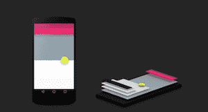
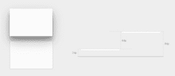

Material Design建议为了凸显布局的层次，建议使用阴影效果，并且Android L为了简化大家的工作，对View进行了扩展，能使大家非常方便的创建阴影效果:

给View添加了一个新的属性：Z 属性，用于描述视图距离它父视图的高度：
在5.0之前，我们的视图都是二维的，只有x轴和y轴，现在，android新增了z轴。x轴和y轴描述了一个view的大小和位置，而z轴描述了view在父视图上抬起的视觉，体现效果就是阴影。下图的两个view的z属性分别为2dp和8dp的视觉效果：

View的Z属性可以通过elevation和translationZ进行修改。
z ＝ elevation＋translationZ
在5.0之前，我们如果想给view添加阴影效果，以体现其层次感，通常的做法是给view设置一个带阴影的背景图片，现在，我们只需要简单的修改view的Z属性，就能让其具备阴影的层次感。
Z属性会扩大view的显示区域，如果它的大小大于或等于父视图的大小，那么它的阴影效果就无法显示了，view并不会因为z属性而把自身缩小腾出空间显示阴影。
Z属性不仅影响着view的阴影效果，还影响着view的绘制顺序，在同一个父view内部，Z属性越小，绘制的时机就越早。也就是优先被绘制，而z属性越大，则绘制时间越晚，后绘制的将会遮盖住先绘制的，只有Z属性相同，才按照添加的顺序绘制。
在Android的世界里，所有的View都是矩形的，虽然可以给View设置背景圆形的图片，即可在界面显示出圆形的内容，但是View的大小实际上仍然是矩形，并且设置的图片也是实际上也是矩形，只是圆形意外的区域为透明色。
如果系统根据View的大小来为我们生成对应的阴影，有时候就会出现很奇怪的效果。
为了解决该类问题，View增加了一个新的描述来指明内容显示的形状，这就是轮廓。通过shape设置的背景，View会自动根据shape的形状进行轮廓判定，通过color设置的背景，View默认其轮廓和View的大小一样。但是通过图片进行背景设置，View则无法获知轮廓的形状，这个时候就需要我们程序员显示的指定。
在xml布局中，可以通过android:outlineProvider来指定轮廓的判定方式：
none 即使设置了Z属性，也不会显示阴影background 会按照背景来设置阴影形状bounds 会按照View的大小来描绘阴影paddedBounds 和bounds类似，不过阴影会稍微向右偏移一点在代码中，我们可以通过setOutlineProvider来指定一个View的轮廓：
ViewOutlineProvider viewOutlineProvider = new ViewOutlineProvider() {
public void getOutline(View view, Outline outline) {
// 可以指定圆形，矩形，圆角矩形，path
outline.setOval(0, 0, view.getWidth(), view.getHeight());
}
};
View.setOutlineProvider(viewOutlineProvider );
注意：如果采用图片作为背景，即使在xml布局中指定android:outlineProvider为background也不会显示阴影，只有通过代码中指定轮廓来显示。
给View指定轮廓，可以决定阴影的显示形状，如果给View指定一个小于自身大小的轮廓，则阴影通常会被View遮住，这个时候View的显示内容并没有因为轮廓的缩小而缩小。
如果想根据轮廓来缩小一个View，则可以通过剪裁。如果一个View指定了轮廓，调用setClipToOutline方法，就可以根据轮廓来剪裁一个View。想要剪裁轮廓，必须要给View先指定轮廓，并且轮廓是可以被剪裁的，目前只有圆形，矩形，圆角矩形支持剪裁，可以通过outline.canClip()来判断一个轮廓是否支持剪裁。
Path剪裁不会改变View的大小，但是如果Path的范围比View要的bounds要小，则剪裁后会改变View的位置，位置偏移和Z属性有关，这可能是一个BUG，view的设计者可能在绘制阴影时根据轮廓偏移了画布，而在绘制完后忘记把画布还原了。
剪裁不会改变View的测量大小和布局大小，也不会改变View的触摸区域，剪裁只是在onDraw的时候对画布做了剪裁处理，剪裁也不同于scale，scale是调整画布matrix的缩放属性，调整后，View仍然能完整显示，而剪裁是缩小画布的剪裁区域，剪裁后我们只能看到View的不一部分。
试图给View一个比较大的轮廓进行剪裁也是不成功的，实验证明剪裁后的View只能比原有体积小。扩大轮廓只会扩大轮廓的绘制区域。
剪裁是一个非常消耗资源的操作，我们不应该用此来做动画效果，如果要实现这样的动画，可以使用Reveal Effect